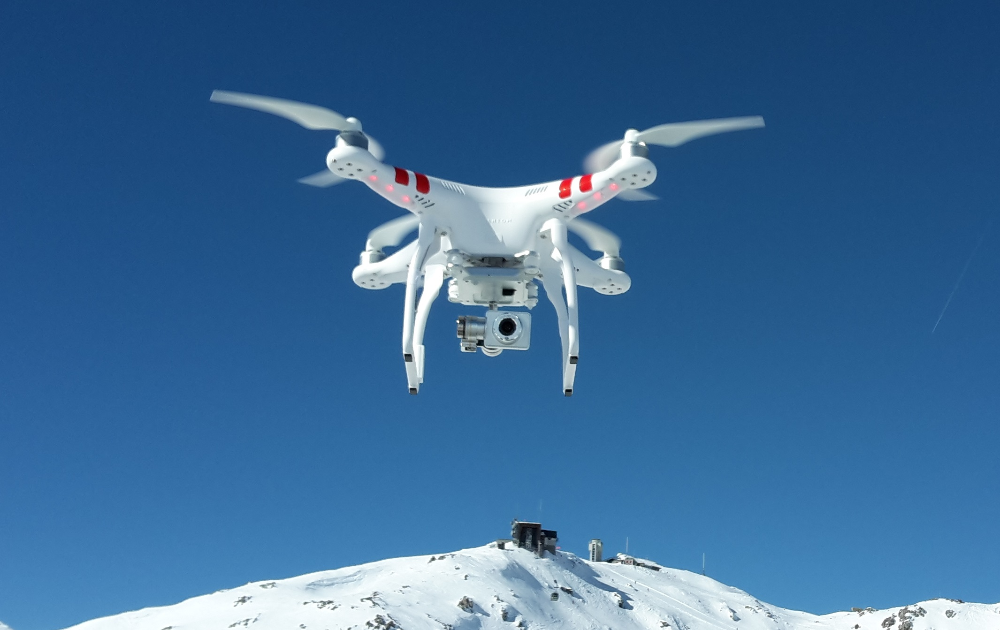

Unmanned Aerial Vehicle UAV™
An unmanned aerial vehicle, commonly called a drone, is an aircraft without a pilot on board. It may be remotely controlled or use automated systems. Drones are used for photography, surveying, farming and other tasks (Wikipedia contributors, n.d.).

Terminology
- UAV: unmanned aerial vehicle.
- UAS: unmanned aircraft system, including the aircraft and supporting equipment.
- Aircraft
- Ground control equipment
- Communication link
- Quadcopter: a rotorcraft with four rotors.
History of Drones
Uncrewed aircraft developed through military experimentation and radio control. Improvements in navigation, electronics and cameras later supported wider civilian uses (Wikipedia contributors, n.d.).
- Early experiments in uncrewed flight.
- Development of remotely controlled aircraft.
- Expansion into civilian photography and surveying.
Amazon | Read the source article
© Wikipedia contributors. Text adapted from Wikipedia under CC BY-SA 4.0.